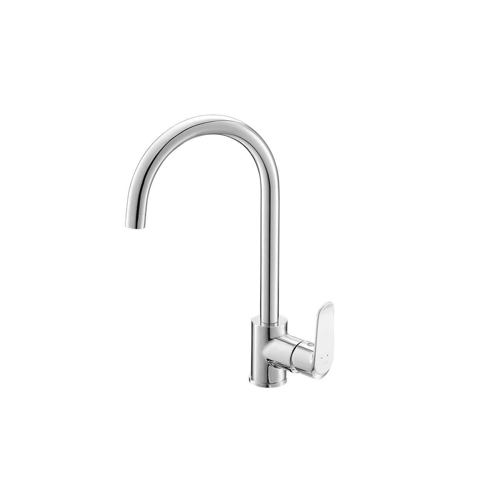
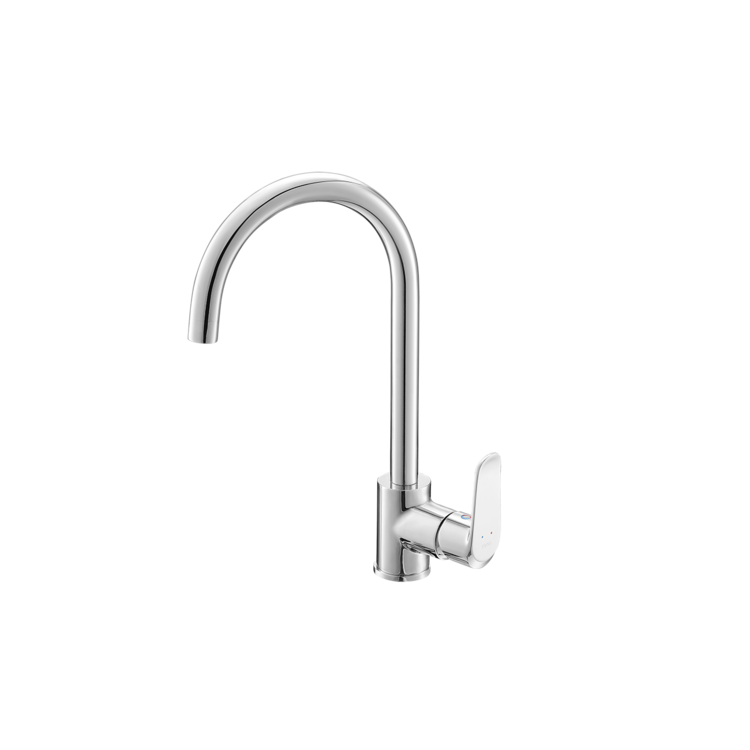

Vòi bếp SFV-800S là lựa chọn lý tưởng cho gian bếp hiện đại khi kết hợp hoàn hảo giữa thiết kế cổ ngỗng thanh thoát và hiệu năng vận hành bền bỉ. Sản phẩm được sản xuất trên dây chuyền công nghệ hiện đại của Nhật Bản, đảm bảo độ chuẩn xác và chất lượng cao nhất.Ưu điểm của vòi chậu rửa bếp SFV-800SThiết kế cổ ngỗng tinh tế và tiện dụngThiết kế vòi cổ ngỗng với vòng cung cao không chỉ mang lại vẻ đẹp đẳng cấp cho phòng bếp mà còn giúp nước không bị bắn ra ngoài khi sử dụng.Vòi bếp SFV-800S có khả năng xoay trái phải dễ dàng giữa hai bồn rửa, giúp việc nội trợ trở nên linh hoạt và thuận tiện hơn.Kích thước với chiều cao 364mm và chiều rộng 192mm giúp tăng không gian thao tác trong bồn rửa chén.Chất liệu cao cấp, an toàn cho sức khỏeVòi bếp SFV-800S được làm từ chất liệu đồng thau bền bỉ, có khả năng kháng khuẩn, đảm bảo nguồn nước luôn tinh khiết và an toàn cho sức khỏe.Bề mặt được phủ lớp mạ Crom/Niken cao cấp, giữ cho sản phẩm luôn sáng bóng, bền màu và chống gỉ sét hiệu quả theo thời gian.Sản phẩm được thiết kế với độ bền cực cao, đảm bảo vận hành ổn định trên 10 năm.Tính năng vận hành thông minhHệ thống điều khiển mượt mà giúp nước nhanh chóng chảy ra và cho phép người dùng điều chỉnh nhiệt độ nóng/lạnh một cách chính xác, dễ dàng.Công nghệ phun bọt tại đầu vòi giúp dòng nước chảy êm, hạn chế tình trạng bắn nước và tiết kiệm nước hiệu quả.Cấu trúc vòi đơn giản, cho phép quá trình lắp đặt diễn ra nhanh chóng và thuận tiện.Video giới thiệu về vòi bếp INAXThông số kỹ thuậtMã sản phẩmSFV-800SLoại vòiVòi rửa bát nóng lạnh / Vòi rửa chén cổ ngỗngKích thước (Cao x Rộng)364 x 192 (mm)Thương hiệuINAXKiểu dángThiết kế dáng cổ ngỗng thân cao thanh lịch, có khả năng xoay linh hoạt giúp mở rộng phạm vi xả rửa tại chậuChất liệuThân vòi bằng Đồng thau mạ Crom/Niken cao cấp, kết cấu dày dặn, chống ăn mòn và giữ bề mặt luôn sáng bóng như mớiChế độ nước2 chế độ Nóng và Lạnh tiện lợi, dễ dàng điều chỉnh lưu lượng và nhiệt độ nước theo nhu cầu sử dụngLưu ý vệ sinhĐể bảo vệ lớp mạ Crom/Niken luôn sáng bóng, không dùng các chất tẩy rửa có tính axit mạnh hoặc búi rác kim loại để chà sát bề mặt vòiMàu sắcCrom sáng bóng, sang trọng và hạn chế bám bẩnKhác- Hotline tư vấn và bảo hành chính hãng: 18006633
Vòi bếp SFV-800S
Vòi bếp thương hiệu INAX.
Đã cập nhật danh sách yêu thích.
DANH MỤC: Vòi bếp
MÃ SẢN PHẨM: SFV-800S
DEPTH: 0mm
HEIGHT: 364mm
WIDTH: 192mm
Vòi bếp SFV-800S là lựa chọn lý tưởng cho gian bếp hiện đại khi kết hợp hoàn hảo giữa thiết kế cổ ngỗng thanh thoát và hiệu năng vận hành bền bỉ. Sản phẩm được sản xuất trên dây chuyền công nghệ hiện đại của Nhật Bản, đảm bảo độ chuẩn xác và chất lượng cao nhất.Ưu điểm của vòi chậu rửa bếp SFV-800SThiết kế cổ ngỗng tinh tế và tiện dụngThiết kế vòi cổ ngỗng với vòng cung cao không chỉ mang lại vẻ đẹp đẳng cấp cho phòng bếp mà còn giúp nước không bị bắn ra ngoài khi sử dụng.Vòi bếp SFV-800S có khả năng xoay trái phải dễ dàng giữa hai bồn rửa, giúp việc nội trợ trở nên linh hoạt và thuận tiện hơn.Kích thước với chiều cao 364mm và chiều rộng 192mm giúp tăng không gian thao tác trong bồn rửa chén.Chất liệu cao cấp, an toàn cho sức khỏeVòi bếp SFV-800S được làm từ chất liệu đồng thau bền bỉ, có khả năng kháng khuẩn, đảm bảo nguồn nước luôn tinh khiết và an toàn cho sức khỏe.Bề mặt được phủ lớp mạ Crom/Niken cao cấp, giữ cho sản phẩm luôn sáng bóng, bền màu và chống gỉ sét hiệu quả theo thời gian.Sản phẩm được thiết kế với độ bền cực cao, đảm bảo vận hành ổn định trên 10 năm.Tính năng vận hành thông minhHệ thống điều khiển mượt mà giúp nước nhanh chóng chảy ra và cho phép người dùng điều chỉnh nhiệt độ nóng/lạnh một cách chính xác, dễ dàng.Công nghệ phun bọt tại đầu vòi giúp dòng nước chảy êm, hạn chế tình trạng bắn nước và tiết kiệm nước hiệu quả.Cấu trúc vòi đơn giản, cho phép quá trình lắp đặt diễn ra nhanh chóng và thuận tiện.Video giới thiệu về vòi bếp INAXThông số kỹ thuậtMã sản phẩmSFV-800SLoại vòiVòi rửa bát nóng lạnh / Vòi rửa chén cổ ngỗngKích thước (Cao x Rộng)364 x 192 (mm)Thương hiệuINAXKiểu dángThiết kế dáng cổ ngỗng thân cao thanh lịch, có khả năng xoay linh hoạt giúp mở rộng phạm vi xả rửa tại chậuChất liệuThân vòi bằng Đồng thau mạ Crom/Niken cao cấp, kết cấu dày dặn, chống ăn mòn và giữ bề mặt luôn sáng bóng như mớiChế độ nước2 chế độ Nóng và Lạnh tiện lợi, dễ dàng điều chỉnh lưu lượng và nhiệt độ nước theo nhu cầu sử dụngLưu ý vệ sinhĐể bảo vệ lớp mạ Crom/Niken luôn sáng bóng, không dùng các chất tẩy rửa có tính axit mạnh hoặc búi rác kim loại để chà sát bề mặt vòiMàu sắcCrom sáng bóng, sang trọng và hạn chế bám bẩnKhác- Hotline tư vấn và bảo hành chính hãng: 18006633
DANH MỤC: Vòi bếp
MÃ SẢN PHẨM: SFV-800S
DEPTH: 0mm
HEIGHT: 364mm
WIDTH: 192mm